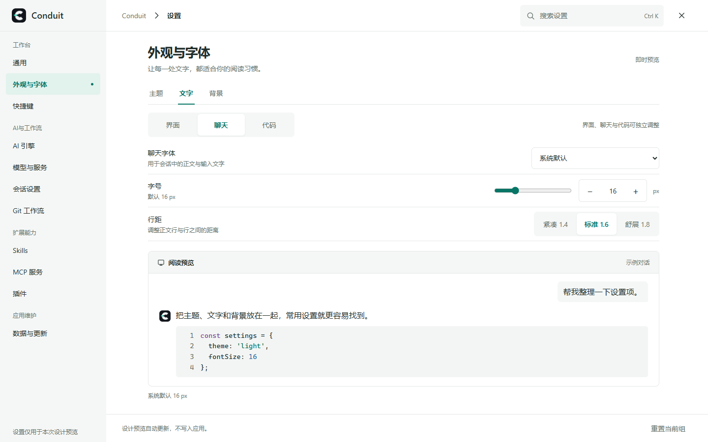
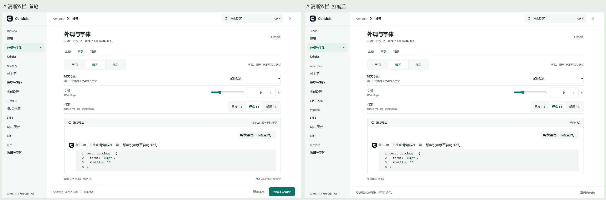

三个方案均覆盖布局、质感和操作效率。

修正自动保存的表达和重置范围，缩小窄屏底栏，减少非必要的提示。

当前方案最需要重排的是：页面标题、分类与分组的层级；长表单中的任务定位；配置与阅读效果的距离。建议先看 A 的整体秩序，再比较 B 的实时反馈与 C 的搜索路径。
另外三个备选为：延续旧原型的单页阅读、色块任务台、主题色谱。前者与 B 接近，后两者更适合局部功能，暂未做成完整方向；它们的取舍记录在 directions.md。
三版均为离线 HTML 原型，未修改 Rust / GPUI。真实功能入口来自当前源码；原生视觉评审参考历史截图，未取得今天运行窗口的即时截图。
1440 × 900 同尺寸比较。点击截图可打开交互版本；页面中的设置只存在本次浏览器内存。